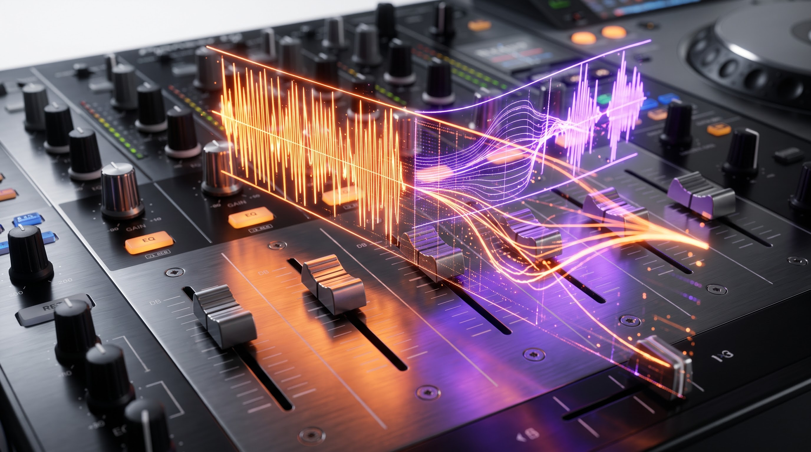
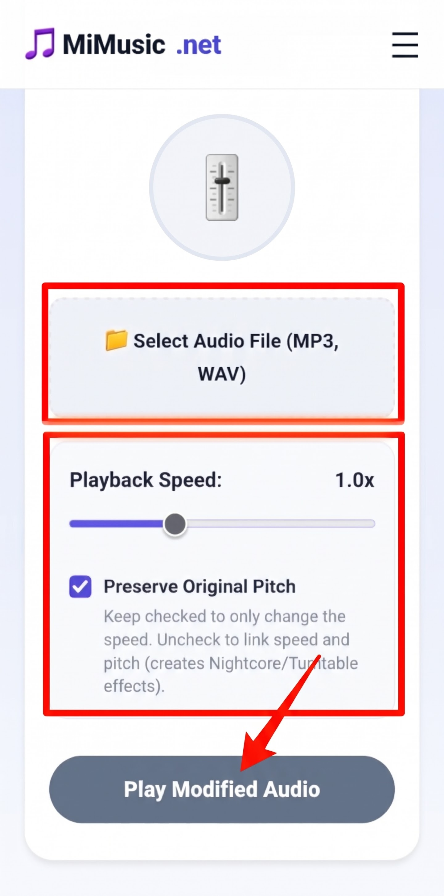

Modify playback speed and musical pitch in real time. Craft viral Nightcore tracks, slowed-and-reverbed vibes, or transcribe rapid speech right in your browser.
🎚️
Playback Speed1.00x
Keep checked to alter tempo cleanly without altering key. Uncheck to link speed and musical pitch for classic tape and vinyl turntable effects.

The Digital Physics of Time-Stretching and Resampling
In analog sound reproduction, playback speed and musical pitch were fundamentally inseparable. If you took a 33 RPM vinyl disc and spun it on a turntable at 45 RPM, the music sped up chronologically and every harmonic note shifted upward into a chipmunk-like higher register. Conversely, dragging your finger along the rim of the turntable platter slowed the track down while dropping the key into a low, droning baritone. This mechanical coupling occurs because physical playback speed directly alters the frequency at which recorded waveforms strike the playback needle.
In modern digital signal processing (DSP), audio engineers distinguish between two distinct transformation paradigms: resampling (where speed and pitch remain mechanically linked) and time-stretching (where playback speed changes while the musical key is preserved). The MiMusic Pitch & Tempo Changer puts both of these engineering capabilities directly into your browser, allowing you to manipulate audio files with zero lag, zero cloud rendering bottlenecks, and complete acoustic fidelity.
Choosing Between Clean Time-Stretching and Vinyl Resampling
Depending on your creative or practical workflow, toggling pitch preservation produces radically different auditory outcomes:
Time-Stretching (Preserve Pitch Checked): When this setting is active, the browser's audio engine splits the incoming signal into tiny overlapping temporal windows, recalculating phase alignment using phase vocoder algorithms. This allows you to listen to long educational lectures, fast-paced interviews, or language study files at 1.5x or 2.0x speed without distorting the speaker's natural vocal timbre into squeaky pitches.
Tape Resampling (Preserve Pitch Unchecked): When you disengage pitch preservation, the browser simply reads the digital audio buffer faster or slower without mathematical phase correction. This produces the pristine, analog tape-stop and turntable acceleration effects prized by music producers and TikTok creators.
Crafting Viral Aesthetics: Nightcore and Slowed + Reverb
Disengaging pitch preservation unlocks the two most influential audio remix subcultures of the digital era:
Nightcore (1.20x to 1.35x Speed): Originating as a DIY dance remix phenomenon in the early 2000s, Nightcore accelerates high-energy pop, rock, or trance songs, elevating the vocals into an ecstatic, anime-inspired soprano range while intensifying rhythmic drive.
Slowed & Chopped (0.75x to 0.88x Speed): Slowing down hip-hop, R&B, or indie tracks creates a moody, nostalgic, and deeply atmospheric lo-fi texture. The lowered vocal formants and elongated instrumental decays generate an intimate, dreamlike soundstage popular in aesthetic video edits.
Step-by-Step Guide: How to Adjust Speed and Pitch Online
Customizing your audio files takes only a few quick adjustments in our interactive workspace:

Upload your audio track, adjust the playback speed slider, and toggle pitch preservation as needed.
Step 1: Upload Your Audio Track: Tap the dashed file picker to load any audio file from your device, including MP3, WAV, AAC, or OGG tracks.
Step 2: Adjust Playback Tempo: Slide the speed control from 0.50x (half-speed slow motion) up to 2.00x (double-speed acceleration) in precise 0.05 increments.
Step 3: Select Pitch Behavior: Keep "Preserve Original Pitch" checked if you are studying lecture notes or transcribing spoken word. Uncheck it if you want to create stylized Nightcore or slowed remixes.
Step 4: Listen Live: Tap "Play Modified Audio". You can freely adjust the slider and flip the checkbox in real time during playback to hear instant transformations.
100% In-Memory Privacy: No Server Processing
Traditional audio modification websites force you to upload private songs or sensitive voice memos to remote cloud servers, making you wait in conversion queues while burning mobile data. MiMusic.net executes all playback rate modulations locally within your browser's dedicated media thread. Your files remain entirely inside device RAM, guaranteeing immediate real-time playback and uncompromised privacy.
Frequently Asked Questions
Tempo refers to the chronological speed or beats-per-minute (BPM) of an audio track. Pitch refers to the acoustic frequency and musical key of the sound. Our tool allows you to change tempo independently or link both together like an analog turntable.
When pitch is linked to speed, the browser simply reads existing audio samples faster or slower without mathematical phase slicing, resulting in zero digital artifacts. Preserving pitch at extreme speeds requires digital time-stretching algorithms that can introduce slight phase textures.
Never. All media decoding and real-time playback rate transformations happen strictly within your local browser memory using native HTML5 audio APIs. Your media never leaves your device.
Yes! Our tool supports live dynamic parameter updates. You can drag the speed slider or toggle pitch preservation in real time during playback to instantly preview the sonic changes without restarting the track.